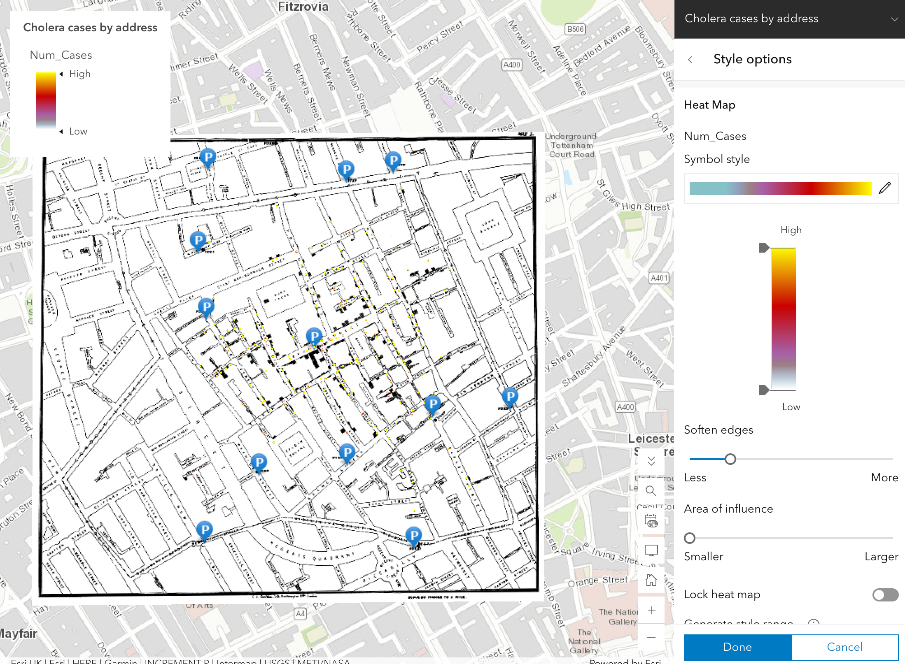
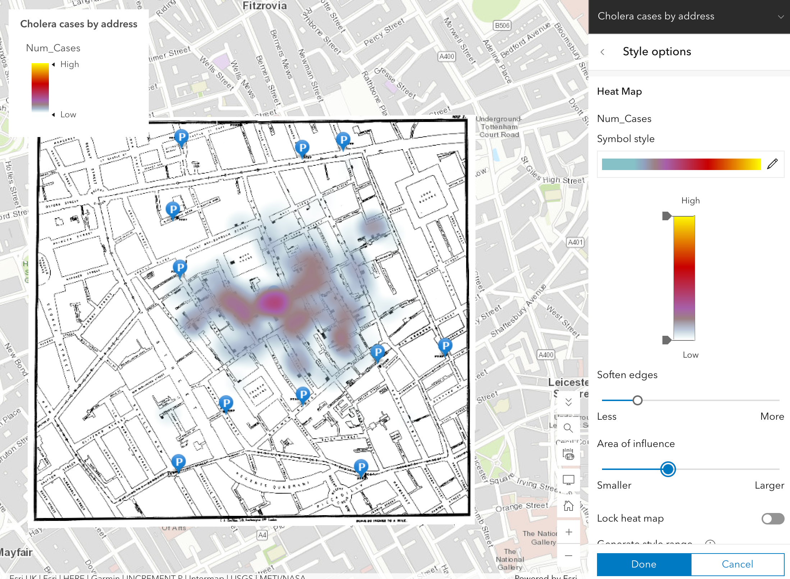
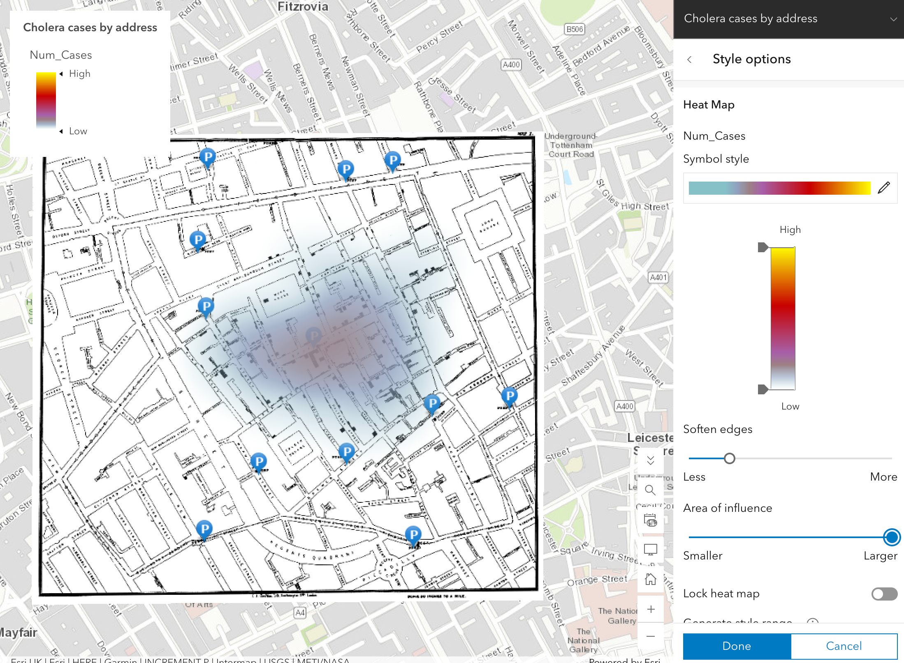

Lab 01 · September 2026
Map 1 Soho Cholera
The question：
Where were cholera deaths concentrated in Soho, London, in 1854, and how does changing the heat map bandwidth affect the apparent relationship between the cholera hotspot and public water pumps?
The data
I used the Soho cholera teaching web map provided for this lab. The map includes a historical scan of John Snow’s 1854 cholera map, a layer of public water pumps, a layer of cholera cases by address, and a Soho reference layer. The cholera case dataset contains 322 geocoded addresses. The Num_Cases field records the number of cholera deaths associated with each address. The public water pump layer contains 12 pumps.
The data also have an important historical naming issue. The pump closest to the hotspot is labelled 43 Broadwick Street, but the street was called Broad Street in 1854 and was renamed Broadwick Street in 1936. This means that the map combines historical spatial information with a modern street name.
Source: Esri, Soho cholera teaching web map, based on John Snow’s 1854 cholera map and related cholera-address data.
One thing the dataset does not show is which water pump each individual person actually used. The map therefore allows me to compare the spatial locations of deaths and pumps, but not individual water-use behavior.
The method
I used ArcGIS Online Map Viewer to create a weighted Kernel Density Estimation (KDE) heat map.
I used Num_Cases as the weighting field. This means that addresses with more recorded deaths contribute more strongly to the density surface. The result is therefore a map of estimated cholera-death concentration rather than simply a map showing where the 322 addresses are located. The KDE bandwidth was controlled using ArcGIS's Area of influence slider. The interface does not show the numerical bandwidth value, so I tested three relative settings:
Far left: smallest area of influence
Middle: medium area of influence
Far right: largest area of influence
I kept the map extent the same for all three settings so that I could compare the results consistently.
For each setting, I recorded:
how many of the 12 public water pumps fell within the hottest colour band; whether 43 Broadwick Street was the pump closest to the centre of the hotspot.
I used the three settings as a sensitivity check rather than assuming that one bandwidth was automatically correct.



What I found
The sensitivity check showed that changing the KDE bandwidth changed the appearance of the hotspot and the number of pumps that fell within the hottest colour band.
With the smallest area of influence, the heat map became very localized, and 0 pumps fell within the hottest colour band.
With the middle setting, approximately 1 pump fell within the hottest colour band.
With the largest area of influence, approximately 4 pumps fell within the hottest colour band.
However, 43 Broadwick Street remained the pump closest to the centre of the hotspot in all three settings.
This means that the number of pumps included in the hottest area was sensitive to the bandwidth, while the identity of the pump closest to the hotspot centre remained stable across the three settings I tested.
What this does not show
The heat map does not prove that the pump at 43 Broadwick Street caused the cholera outbreak. It also does not show which pump each individual person used. It shows a spatial relationship between recorded cholera deaths and public water pumps, rather than direct evidence of individual water use or causation. The appearance of the hotspot also depends on the KDE bandwidth. In my sensitivity check, the number of pumps in the hottest colour band changed from 0 to 1 to 4 as the area of influence increased. A single version of the map would hide this dependence on the parameter. The map also contains a historical naming limitation. The pump is labelled 43 Broadwick Street, although the street was known as Broad Street in 1854. The location can still be compared spatially, but the modern street name should not be interpreted as the historical name used during the outbreak. Finally, the heat map is an estimated density surface. Its coloured areas are calculated from the observed point data rather than being direct measurements of cholera intensity at every location. Changing the bandwidth changes how broadly each observation contributes to the surrounding area, so a different bandwidth would produce a different visual pattern even though the underlying data stayed the same.
AI use: AI-assisted for organizing and polishing the portfolio wording, using ChatGPT. I checked the final writing against my ArcGIS maps and the Lab 1 instructions. The map analysis, parameter choices, sensitivity observations, and interpretation are my own.